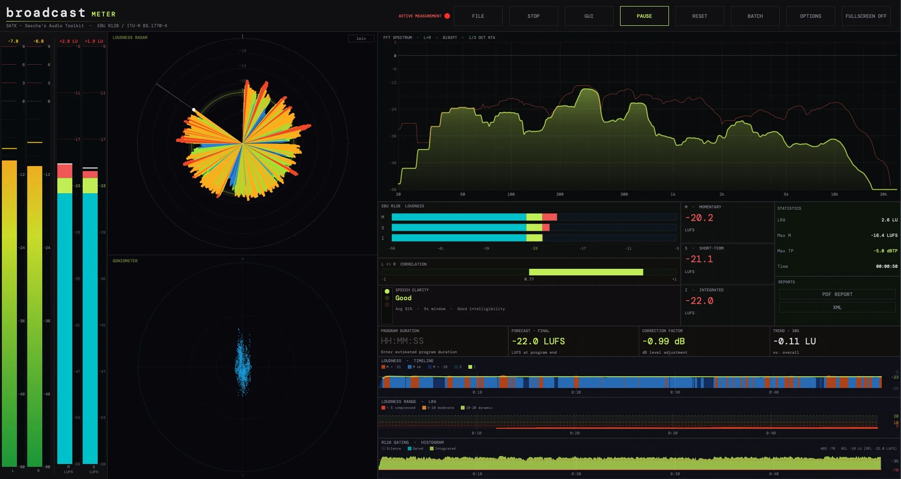
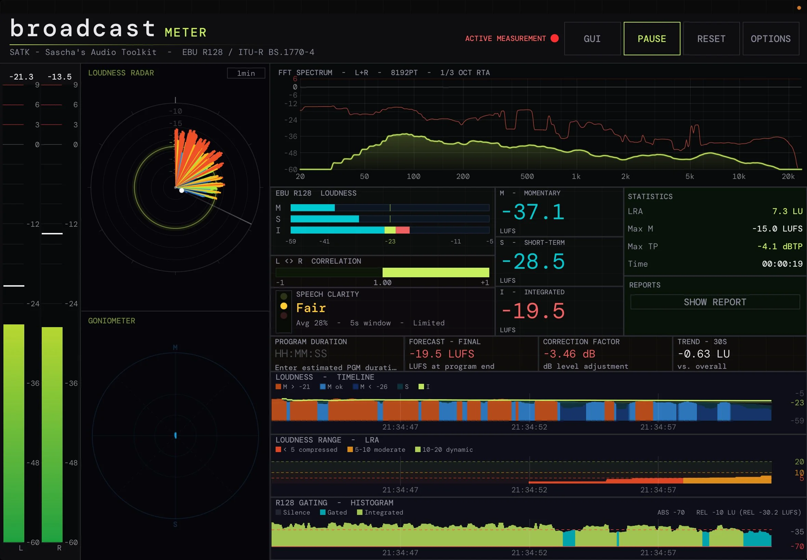
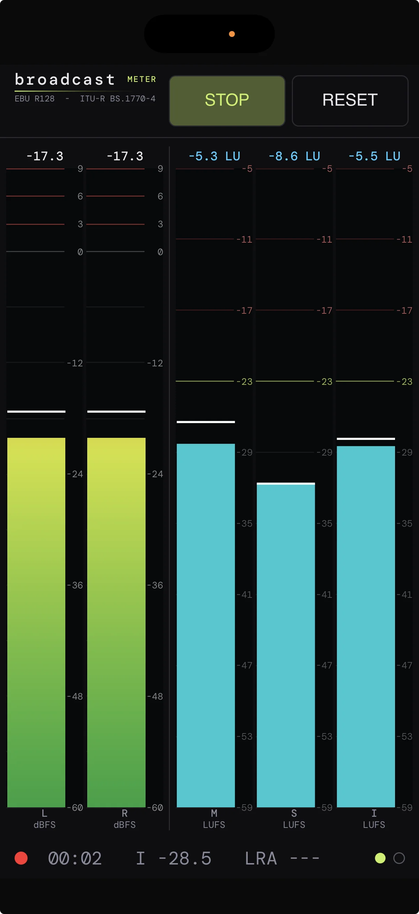
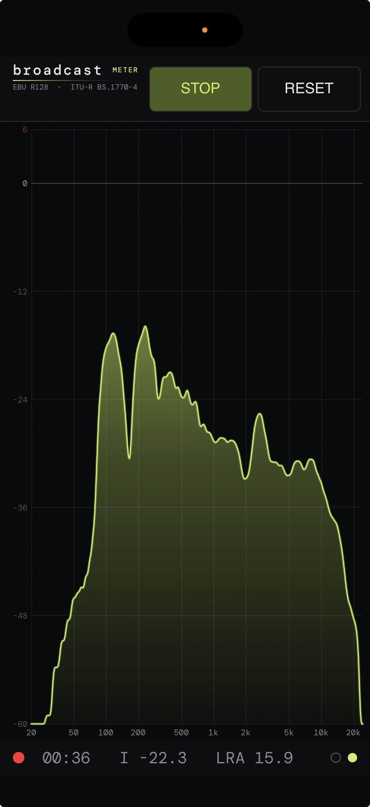

Der professionelle Loudness-Meter für Sendung, Postproduktion und Live-Broadcast — EBU R128 / ITU‑R BS.1770‑4 konform, mit KI-gestützter Sprachanalyse.

Ob du eine Nachrichtensendung mischt, einen Hörspiel-Master abnimmst oder eine Live-Show fährst — der Broadcast Meter zeigt dir nicht nur, ob dein Pegel stimmt. Er zeigt dir, wie verständlich deine Sprache ankommt, wie sich dein Programm bis zum Sendeende entwickelt, und ob deine Dynamik im erlaubten Korridor bleibt. Alles in Echtzeit, in einer einzigen klaren Oberfläche.
Momentary, Short-Term und Integrated Loudness mit korrekter 400-ms-Gating-Engine bei 75% Overlap. Power-Domain in double precision — keine LUFS-Drifts bei stundenlangen Programmen. LRA nach EBU Tech 3342.
Inter-Sample-Peak-Detection mit 4-fachem polyphasem FIR-Filter. Spot-genau auch bei Inter-Sample-Peaks — kompatibel zu allen R128-Limitern. Update-Rate 200 ms, flüssig ohne Zappeln.
Silero VAD v5 erkennt Sprache zuverlässig auch unter Musik. wespeaker ResNet34-LM mit Speaker-Lock erkennt Sprecherwechsel automatisch. Ampel: Good · Fair · Poor — sagt dir, ob deine Sprache verständlich ankommt, bevor das Telefon klingelt.
Vorhersage der Integrated Loudness und LRA am Programmende auf Basis des bisherigen Verlaufs. Programm-Dauer-Panel mit Restzeit, 4-Felder-Banner mit Loudness-Trend, LRA-Trend und Reserve.
PPM Bars in Broadcast-Skala (-59…-5) mit Cyan/Grün/Rot-Zonen, Goniometer mit Korrelation, FFT-Spektrum, Loudness Radar und drei Histogramme (Loudness, LRA, R128 Gating). Vertraute Optik für erfahrene Tonmeister.
All / Live / Analytics — drei Modi für jede Situation. Batch-Modus für ganze Ordner mit CSV- und Multi-Page-PDF-Reports. MIDI Learn, Bluetooth MIDI Pairing und GPI für die Regie.
Dieselbe DSP läuft auf jeder Plattform. Der Funktionsumfang skaliert mit dem Einsatzgebiet — vom mobilen Quick-Check bis zur Vollproduktion.
| Feature | macOS App | Plugin | iPad App | iPhone Mini |
|---|---|---|---|---|
| Preis | 89 € | 59 € | 24,99 € | 9,99 € |
| LUFS-I/S/M Metering | ✓ | ✓ | ✓ | ✓ |
| True Peak (4× polyphase) | ✓ | ✓ | ✓ | ✓ |
| FFT Spektrum | ✓ | ✓ | ✓ | ✓ |
| PPM Bars (RTW-Style) | ✓ | ✓ | ✓ | ✓ |
| Goniometer / Korrelation | ✓ | ✓ | ✓ | — |
| Loudness Radar | ✓ | ✓ | ✓ | — |
| Sprachklarheit (Silero VAD) | ✓ | ✓ | ✓ | — |
| Programm-Prognose | ✓ | ✓ | ✓ | — |
| Histogramme (Loudness, LRA, Gating) | ✓ | ✓ | ✓ | — |
| MIDI Remote (Bluetooth + Learn) | ✓ | — | ✓ | — |
| GPI Remote | ✓ | — | — | — |
| File-Open / Batch-Analyse | ✓ | — | — | — |
| PDF / CSV Reports | ✓ | — | — | — |

iPad App
iPhone Mini · Meters
iPhone Mini · SpectrumEgal ob als Plugin in deiner DAW oder als Standalone neben dem Schnitt – der Workflow bleibt der gleiche.
VST3, AU oder Standalone öffnen. Audio routet automatisch ein – kein Setup, keine Konfiguration nötig.
Alle Werte in Echtzeit: LUFS-I/S/M, TP, LRA, Sprachklarheit, Korrelation. Histogramme dokumentieren den Verlauf.
Prädiktive Anzeige zeigt vor Sendeschluss, ob du im R128-Korridor bist. MIDI- und GPI-Remote für die Regie.
PDF-Report mit allen Metriken, Histogrammen und Timeline. Batch-CSV für ganze Sendungen oder Folgenpakete.
Saubere DSP, keine Mogelpackungen.
Andere Loudness-Meter zeigen dir Zahlen. Der SATK Broadcast Meter zeigt dir, was sie bedeuten — von der Sprachverständlichkeit bis zur Endprognose. Entwickelt von einem Sendetontechniker für Sendetontechniker.